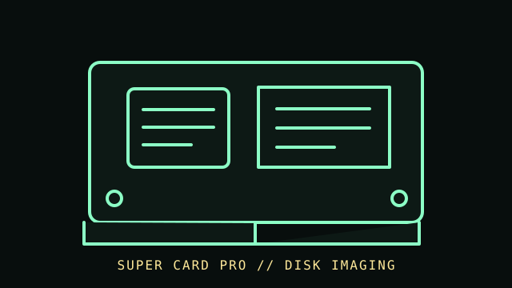

[ FLOPPY DRIVES // IDENTIFIED MODEL ]
SuperCard Pro Floppy Controller
SuperCard Pro is a disk-imaging controller used with a separate floppy mechanism. It is distinct from a drive and from the filesystem-focused FC5025; its supported capture workflow and host software must be verified from current documentation.

MODEL IDENTIFICATION: SuperCard Pro controller; record board revision, firmware, software, interface cable, and attached drive model. Confirm the full designation, revision, interface and service-document edition. This record is not a general compatibility guarantee.
Recorded specifications
| Catalog model | SuperCard Pro Floppy Controller |
|---|---|
| Device type | Controller-adjacent floppy imaging interface |
| Interface / connector | Host connection and drive-facing wiring are model/cable-specific; follow the manufacturer pinout and power instructions for the exact board. |
| Media / formats | The controller captures disk data using its supported imaging workflow. Formats, track coverage, and decoding depend on media, drive, firmware/software, and acquisition settings; no universal capacity is claimed. |
| Revision caution | Verify model suffix, label, board/firmware revision, cable and manual edition. Model-family similarity is not proof of pinout, BIOS support, interchangeability or format compatibility. |
Host and controller compatibility
- Requires a separately connected drive and compatible host software; confirm supported drive types, cable mapping, and supply requirements in manufacturer documentation.
- Do not confuse a disk-image controller with a drive emulator: it acquires from physical media and does not itself provide a drive mechanism.
- Save raw/original capture files and logs before conversion. Compatibility of a converted image with a target emulator or host is a separate test.
Safe preservation and cleaning
Disconnect power before connecting or servicing the controller and drive. Keep damaged or contaminated media out of the mechanism. Preserve original captures, configuration, firmware and checksums; clean the drive only by its manufacturer’s procedure and never clean the disk with household solvents.
Photograph labels and connectors before service. Record the host, controller, settings, software, condition and source document. Keep original media or raw captures intact; verify checksums before making derivatives.
Manufacturer manuals & archival references
- SuperCard Pro — manufacturer product and documentation pageManufacturer product reference; use the linked current manual for exact board revision and supported workflow.
- CBM Stuff — official documentation and support siteManufacturer source for current SuperCard Pro manuals and software.
- Library of Congress — Digital format sustainabilityPreservation planning reference; not a controller compatibility or capture-validation guarantee.
Archived manuals may apply to a particular revision or family. The complete model/revision-specific manufacturer manual takes precedence. Capacities and recording modes are omitted where they cannot be tied to the cited model and format.